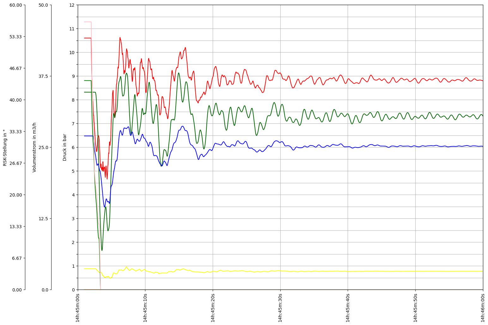

Imports
[1]:
import os
import logging
import pandas as pd
import datetime
import numpy as np
import ipywidgets as widgets
from ipywidgets import interact
import matplotlib
import matplotlib.pyplot as plt
import matplotlib.dates as mdates
import matplotlib.gridspec as gridspec
import matplotlib.ticker as ticker
import matplotlib.colors as mcolors
from matplotlib.pyplot import Polygon
from matplotlib.ticker import FuncFormatter
from matplotlib.dates import DateFormatter, MinuteLocator
import matplotlib.ticker as ticker
try:
from PT3S import dxAndMxHelperFcts
except:
import dxAndMxHelperFcts
try:
from PT3S import Rm
except:
import Rm
[2]:
pt3s_path = os.path.dirname(os.path.abspath(dxAndMxHelperFcts.__file__))
Logging
[3]:
logger = logging.getLogger()
logFileName= r"Example2.log"
loglevel = logging.DEBUG
logging.basicConfig(filename=logFileName
,filemode='w'
,level=loglevel
,format="%(asctime)s ; %(name)-60s ; %(levelname)-7s ; %(message)s")
fileHandler = logging.FileHandler(logFileName)
logger.addHandler(fileHandler)
consoleHandler = logging.StreamHandler()
consoleHandler.setFormatter(logging.Formatter("%(levelname)-7s ; %(message)s"))
consoleHandler.setLevel(logging.INFO)
logger.addHandler(consoleHandler)
Model
[4]:
dbPath="C:\\3S\\SIR 3S\\Modelle\\Beispiele\\Wasser\\Manual\\Modellstände\\"
[5]:
dbFilename="Beispiel_Wasser_STAND9"
Read Model and Results
[6]:
m=dxAndMxHelperFcts.readDxAndMx(dbFile=os.path.join(dbPath+dbFilename+'.db3') #XML converted to db3
,preventPklDump=True
)
INFO ; Dx.__init__: dbFile (abspath): C:\3S\SIR 3S\Modelle\Beispiele\Wasser\Manual\Modellstände\Beispiel_Wasser_STAND9.db3 exists readable ...
INFO ; dxAndMxHelperFcts.readDxAndMx: ..\..\..\..\..\3S\SIR 3S\Modelle\Beispiele\Wasser\Manual\Modellstände\Beispiel_Wasser_STAND9.db3 is newer than ..\..\..\..\..\3S\SIR 3S\Modelle\Beispiele\Wasser\Manual\Modellstände\WDBeispiel_Wasser_STAND9\B1\V0\BZ1\M-1-0-1.2.MX1: SIR 3S' dbFile is newer than SIR 3S' mxFile; in this case the results are maybe dated or (worse) incompatible to the model
INFO ; Mx.setResultsToMxsFile: Mxs: ..\..\..\..\..\3S\SIR 3S\Modelle\Beispiele\Wasser\Manual\Modellstände\WDBeispiel_Wasser_STAND9\B1\V0\BZ1\M-1-0-1.2.MXS reading ...
INFO ; dxWithMx.__init__: Beispiel_Wasser_STAND9: processing dx and mx ...
INFO ; dxWithMx.__init__: Constructing NetworkX Graph GSig failed.
[7]:
df=m.mx.df
Plot
Define Axes
[8]:
def fyP(ax,offset=0):
ax.spines["left"].set_position(("outward", offset))
ax.set_ylabel('Druck in bar')
ax.set_ylim(0,12)
ax.set_yticks(sorted(np.append(np.linspace(0,12,13),[])))
ax.yaxis.set_ticks_position('left')
ax.yaxis.set_label_position('left')
def fyQ(ax,offset=60):
Rm.pltLDSHelperY(ax)
ax.spines["left"].set_position(("outward",offset))
ax.set_ylabel('Volumenstrom in m3/h')
ax.set_ylim(0,50)
ax.set_yticks(sorted(np.append(np.linspace(0,50,5),[])))
ax.yaxis.set_ticks_position('left')
ax.yaxis.set_label_position('left')
def fyRSK(ax,offset=120):
Rm.pltLDSHelperY(ax)
ax.spines["left"].set_position(("outward",offset))
ax.set_ylabel('RSK-Stellung in °')
ax.set_ylim(0,60)
ax.set_yticks(sorted(np.append(np.linspace(0,60,10),[])))
ax.yaxis.set_ticks_position('left')
ax.yaxis.set_label_position('left')
Non-interactive Plot
[9]:
def plot():
fig, ax0 = plt.subplots(figsize=Rm.DINA3q)
ax0.set_yticks(np.linspace(0, 24, 25))
ax0.yaxis.set_ticklabels([])
ax0.grid()
#Druck
ax1 = ax0.twinx()
fyP(ax1)
ax1.plot(df.index, df['KNOT~K0011~~5471942051669438823~PH'], color='red')
ax1.plot(df.index, df['KNOT~5143521_i~~5166327497394449628~PH'], color='darkgreen')
ax1.plot(df.index, df['KNOT~791393_3_k~~5667818255300782920~PH'], color='blue')
ax1.plot(df.index, df['KNOT~1629686_0_i~~5262999985134416180~PH'], color='yellow')
#Volumenstrom
ax2 = ax0.twinx()
fyQ(ax2)
ax2.plot(df.index, df['VENT~K0006~K0004~5659089154378919131~QM'], color='orange')
ax2.plot(df.index, df['VENT~K0011~PST_out~5430537691154258843~QM'], color='green')
#RSK-Stellung
ax3 = ax0.twinx()
fyRSK(ax3)
ax3.plot(df.index, df['KLAP~K0013~K0014~5303247238968995258~PHI'], color='pink')
# Set the x-axis limits
Startzeit=datetime.datetime(2020, 1, 28, 14, 45)
Endzeit=datetime.datetime(2020, 1, 28, 14, 46)
ax0.set_xlim(Startzeit, Endzeit)
Rm.pltHelperX(ax0, dateFormat='%Hh:%Mm:%Ss', bysecond=[0,10,20,30,40,50,60], yPos=0)
plt.show()
[10]:
plot()

Interactive Plot
[11]:
Startzeit_widget = widgets.TimePicker(
value=datetime.time(14, 45),
description='Startzeit:'
)
Endzeit_widget = widgets.TimePicker(
value=datetime.time(14, 46),
description='Endzeit:'
)
Druck = widgets.Checkbox(value=1,description='Druck')
Volumenstrom = widgets.Checkbox(value=1,description='Volumenstrom')
RSK_Stellung = widgets.Checkbox(value=1,description='RSK-Stellung')
[12]:
def interaktive_grafik(Startzeit, Endzeit, Druck, Volumenstrom, RSK_Stellung):
fig, ax0 = plt.subplots(figsize=Rm.DINA3q)
ax0.set_yticks(np.linspace(0, 24, 25))
ax0.yaxis.set_ticklabels([])
ax0.grid()
i=0
Achsen=[]
if Druck == True:
Achsen.append(1)
i+=1
ax1 = ax0.twinx()
fyP(ax1, (i-1)*60)
ax1.plot(df.index, df['KNOT~K0011~~5471942051669438823~PH'], color='red')
ax1.plot(df.index, df['KNOT~5143521_i~~5166327497394449628~PH'], color='darkgreen')
ax1.plot(df.index, df['KNOT~791393_3_k~~5667818255300782920~PH'], color='blue')
ax1.plot(df.index, df['KNOT~1629686_0_i~~5262999985134416180~PH'], color='yellow')
if Volumenstrom == True:
Achsen.append(2)
i+=1
Achsen.append(2)
ax2 = ax0.twinx()
fyQ(ax2, (i-1)*60)
ax2.plot(df.index, df['VENT~K0006~K0004~5659089154378919131~QM'], color='orange')
ax2.plot(df.index, df['VENT~K0011~PST_out~5430537691154258843~QM'], color='green')
if RSK_Stellung == True:
Achsen.append(3)
i+=1
Achsen.append(3)
ax3 = ax0.twinx()
fyRSK(ax3, (i-1)*60)
ax3.plot(df.index, df['KLAP~K0013~K0014~5303247238968995258~PHI'], color='pink')
# Set the x-axis limits
Startzeit=datetime.datetime.combine(datetime.date(2020, 1, 28), Startzeit_widget.value)
Endzeit=datetime.datetime.combine(datetime.date(2020, 1, 28), Endzeit_widget.value)
ax0.set_xlim(Startzeit, Endzeit)
Rm.pltHelperX(ax0, dateFormat='%Hh:%Mm:%Ss', bysecond=[0,10,20,30,40,50,60], yPos=0)
plt.show()
[13]:
widgets_interact = widgets.interactive(interaktive_grafik,
Startzeit=Startzeit_widget,
Endzeit=Endzeit_widget,
Druck=Druck,
Volumenstrom=Volumenstrom,
RSK_Stellung=RSK_Stellung)
[14]:
def update_plot(change):
plt.clf()
interaktive_grafik(Druck=Druck.value, Volumenstrom=Volumenstrom.value, RSK_Stellung=RSK_Stellung.value,
Startzeit=Startzeit.value, Endzeit=Endzeit.value)
Startzeit_widget.observe(update_plot, names='value')
Endzeit_widget.observe(update_plot, names='value')
Druck.observe(update_plot, names='value')
Volumenstrom.observe(update_plot, names='value')
RSK_Stellung.observe(update_plot, names='value')
[15]:
display(widgets_interact) #The display of the interactive plot does not work in the documentation, because a python kernel must run it. To view the interactive plot, download the script and run it.
[16]:
dfDx=m.dx.dataFrames['SPLZ']